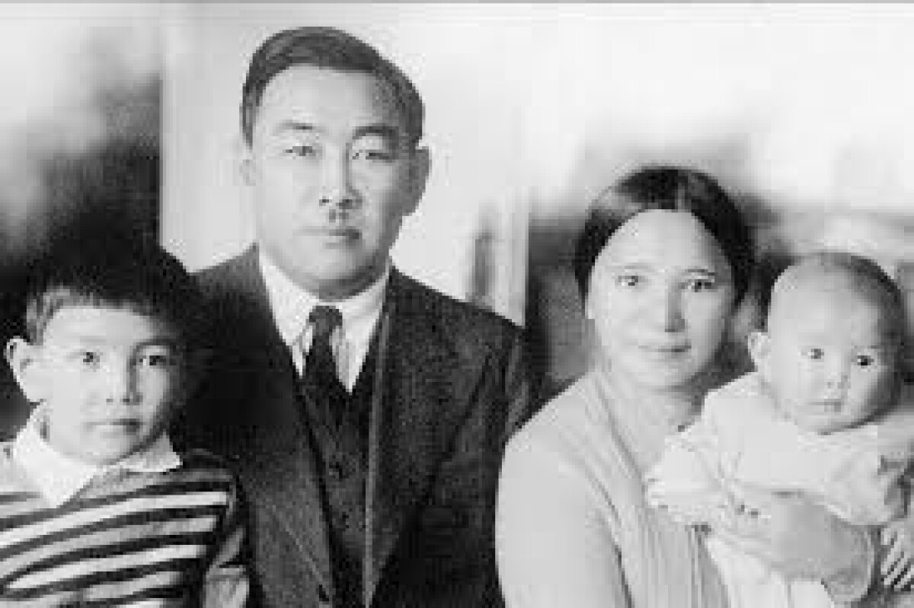

Сара Есова кім?
Бұл музей Сара Есованың қоғамдық қызметі мен тарихи мұрасын бір жерге жинап қана қоймай, деректің қалай табылғанын, тексерілгенін және жас зерттеуші тарапынан қалай зерделенгенін көрсету үшін жасалды.
Өмір жолы
Сара Сәтбайқызы Есова Қызылорда өңірінде дүниеге келді. Болашақ қоғам қайраткерінің балалық шағы Сыр өңірінде өтті.
Педагогикалық білім алып, еңбек жолын ұстаздықтан бастады. Қызылорда мен Ташкент қалаларында мұғалім болып, халық ағарту ісіне араласты.
Қоғамдық-саяси қызметке белсене араласып, партия және комсомол ұйымдарында жауапты қызметтер атқарды. Қазақ әйелдерінің қоғамдық өмірге қатысуына ықпал еткен жас қайраткерлердің қатарынан көрінді.
Жетісу губерниялық партия комитетінің органы «Тілші» газетінде қызмет атқарып, баспасөз арқылы ағартушылық және қоғамдық мәселелерді көтеруге атсалысты.
Қазақстандағы әйелдер қозғалысы мен ағарту саласындағы қызметін жалғастырды. «Әйел теңдігі» журналының жұмысына қатысып, әйелдердің білім алуы мен қоғамдық белсенділігін арттыру мәселелеріне назар аударды. Сонымен қатар халық ағарту және кәсіподақ салаларында жауапты қызметтер атқарды.
Алматыдағы марксизм-ленинизм институтының тарих бөлімінде білім алды. Тарих саласындағы кәсіби даярлығын тереңдетіп, кейінгі ғылыми-ағартушылық және музейлік қызметіне негіз қалады.
Қазақ педагогикалық институтында жалпы тарих кафедрасын басқарды. Бұл кезең Сара Есованың ұстаздық және тарихшы ретіндегі қызметінің маңызды белестерінің бірі болды.
Қазақстанның Орталық музейіндегі ұзақ жылғы қызметін бастады. Музей қорларын зерттеу, тарихи мұраларды жинақтау, сақтау және ғылыми айналымға енгізу ісіне үлес қосты.
Қазақстанның Орталық мемлекеттік музейінің директоры қызметін атқарды. Он жеті жылдық басшылық кезеңінде музей қорын толықтыруға, тарихи жәдігерлерді жинауға және музей ісін дамытуға еңбек сіңірді.
Көп жылғы қоғамдық және мәдени-ағартушылық еңбегі мемлекеттік деңгейде бағаланып, «Құрмет Белгісі» орденімен марапатталды.
Мәдениет саласындағы көп жылғы еңбегі үшін Қазақ КСР-інің еңбек сіңірген мәдениет қызметкері құрметті атағына ие болды.
Құрметті демалысқа шыққаннан кейін де ғылыми-ағартушылық қызметтен қол үзген жоқ. Кітапхана қорларындағы сирек басылымдарды зерттеп, қазақ кітаптарының библиографиялық мұрасын жүйелеу жұмыстарына қатысты.
Сара Сәтбайқызы Есова Алматы қаласында дүниеден өтті. Оның қоғамдық қызметі, әйелдер ағартушылығына қосқан үлесі және музей ісіндегі еңбегі Қазақстанның мәдени-тарихи мұрасының бір бөлігі болып қалды.
Цифрлық архив
Мұнда рұқсат алынған және дереккөзі анықталған материалдар жинақталады.
📷 Фотодеректер

Сара Есованың отбасылық фотосуреті
Бұл тарихи фотосурет Сара Есованың отбасылық өмірінен сыр шертетін құнды деректердің бірі. Фотоматериал тұлғаның қоғамдық қызметімен қатар, оның отбасы ортасын танып-білуге мүмкіндік береді.
Дереккөз: Қазақстан тарихы порталы – e-history.kz. Фотосуреттің бастапқы архивтік деректемелері зерттеу барысында нақтыланады.
📜 Құжаттар
Сара Есованың қоғамдық-ағартушылық қызметіне қатысты архивтік деректер
Бұл бөлімде Сара Есованың қоғамдық қызметі, қазақ әйелдерінің білім алуы мен қоғамдық өмірге араласуына қосқан үлесі, баспасөз саласындағы еңбегі және музей ісімен байланысты қызметін айғақтайтын құжаттық деректер жинақталады.
Зерттеу барысында 1920-жылдардағы «Тілші» газеті мен «Әйел теңдігі» журналына қатысты библиографиялық және архивтік мәліметтерге ерекше назар аударылады. Бұл басылымдар Сара Есованың ағартушылық және қоғамдық қызметінің тарихи аясын зерделеуге мүмкіндік береді.
Сонымен қатар музей қорлары мен ғылыми жарияланымдар арқылы Сара Есованың Қазақстандағы музей ісінің дамуына қосқан үлесіне қатысты деректер жүйеленеді.
Ескерту: цифрлық музейге тек дереккөзі анықталған және ғылыми тұрғыдан тексерілген материалдар енгізіледі.
📰 Баспасөз
Газет-журнал материалдары және Сара Есованың жарияланымдары.
🎙 Естеліктер
Отбасы мүшелері, музей мамандары және зерттеушілер естеліктері.
Исаевтар отбасы архивінің ізімен
Зерттеудің ерекше бағыты — жарияланымдарда «Исаевтар архиві» деп көрсетілген отбасылық фотоматериалдардың тарихын анықтау.
Сара Есова отбасымен
Отбасылық фотосурет. Цифрлық музейдің архивтік материалы.
1. Деректі табу
1921 жылғы фотосуреттің жарияланған нұсқаларын салыстыру.
2. Архив иесін анықтау
Музей, архив және ғылыми жарияланымдар арқылы отбасылық қордың ізін жалғастыру.
3. Түпнұсқаны тексеру
Фотосуреттің сипаттамасы, мерзімі және сақталу тарихын мамандармен нақтылау.
«Сара Есова ізімен» зерттеу экспедициясы
Жобаның авторы ғылыми жетекшісімен бірге музейлер мен архивтерге барып, мамандардан сұхбат алып, деректерді тікелей зерттейді.
Музейге сапарМаманмен сұхбатҚор материалдарыФото және видеоЗерттеу күнделігі
Дереккөздер
Ғылыми мақалалар, музей қорлары, архивтік сілтемелер, мерзімді баспасөз және сұхбат материалдары осы жерде толық библиографиялық сипаттамамен беріледі.
Маңызды: жарияланбаған немесе құқық иесінің рұқсатын қажет ететін материалдар рұқсат алынғаннан кейін ғана сайтқа орналастырылады.